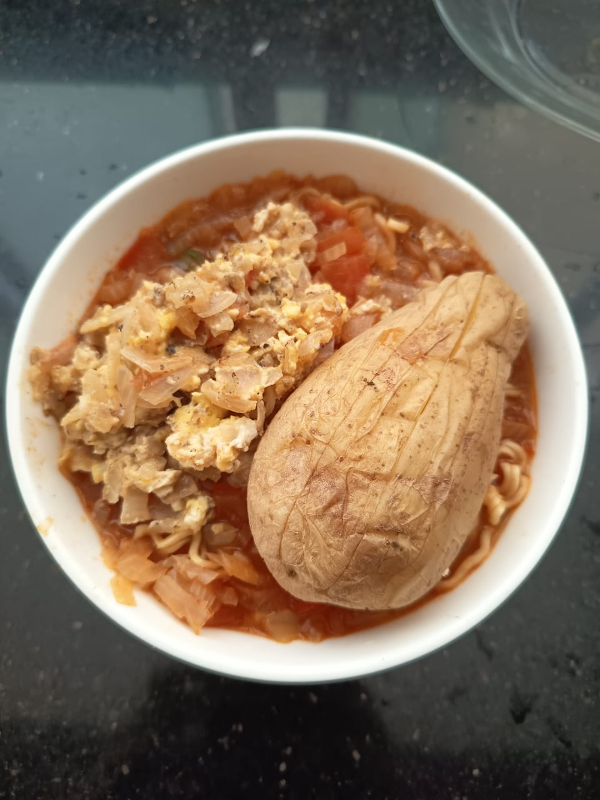

Indomie Extended

Description
Indomie turned into a soup noodles to make it more filling with veggies and eggs
to pretend it's somehow more healthier.
Ingredients
- Indomie instant noodle packet ~ 1 packet
- Onion ~ 1 medium sized
- Tomato ~ 1 small sized
- Grated carrot ~ a handful
- Garlic smashed ~ couple of cloves
- Chilli powder ~ 1/2 tbsp
- Salt ~ according to taste
- (optional) Potato - small slice
- (optional) Greeen chilli - 1 or 2
- (optional) Curry powder - 1/2 tsp
Steps
- Add about 1 - 1 1/4 cup of water to a pot and add smashed garlic,
grated carrot, chopped onion and tomato with chilli powder and the flavor
packs of indomie noodle packet.(smaller the chopped pieces, more of each
flavor is added)
- If optional ingedients are added,
- Finely chop the potato slice as small as possible and add to the pot.
(thickening the soup with potato starch is the objective here).
- Chop green chilli into small pieces as desired and add them to the pot.
- Add curry powder.
- Bring the pot to a boil in high heat and then let it simmer in medium heat for about 15 mins.
- Now add the indomie noodles into the pot and cook it for another 3-4 mins.
- (optional) Add a scrambled omlette and some boiled/roasted veggies like potatoes as a topping if necessary.
Menu